Estados Brasileiros
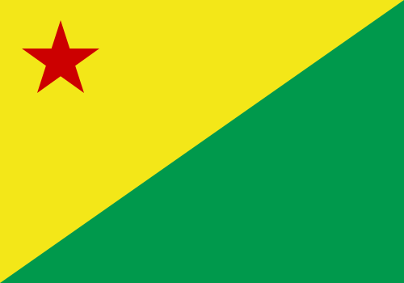
AcreAcre é um estado no extremo oeste do Brasil, conhecido por sua biodiversidade e florestas tropicais. A capital, Rio Branco, é um importante centro urbano na região amazônica. O estado também abriga o Parque Nacional da Serra do Divisor, uma área protegida com rica fauna e flora. Sua história está ligada à exploração da borracha e à presença de diferentes povos indígenas.
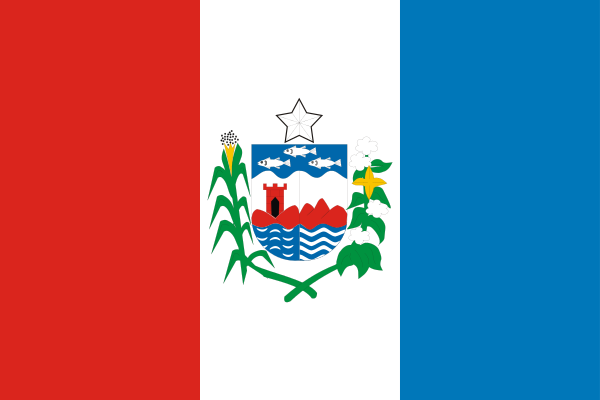
AlagoasAlagoas é um estado no nordeste do Brasil, conhecido por suas praias de areia branca e águas cristalinas. A capital, Maceió, possui uma orla com coqueiros e piscinas naturais. O estado também é famoso por sua cultura rica, incluindo música, dança e culinária típica. Seu litoral reúne lagoas, recifes e comunidades tradicionais de pescadores.
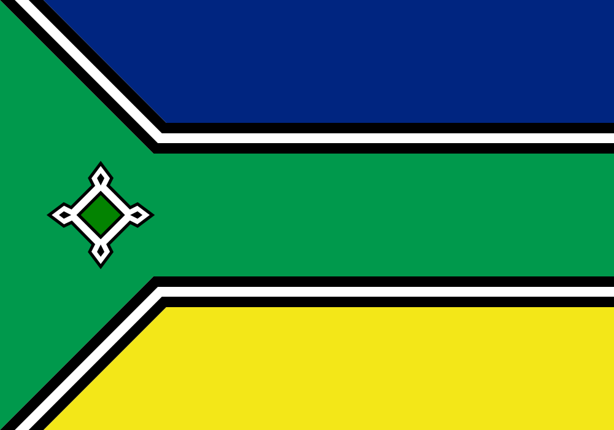
AmapáAmapá é um estado no norte do Brasil, conhecido por sua biodiversidade e florestas tropicais. A capital, Macapá, está localizada na foz do rio Amazonas e é famosa por sua cultura indígena e festivais tradicionais. O estado também abriga o Parque Nacional do Tumucumaque, uma das maiores áreas protegidas da Amazônia. Sua posição no extremo norte dá ao estado uma importante faixa de fronteira com a Guiana Francesa.
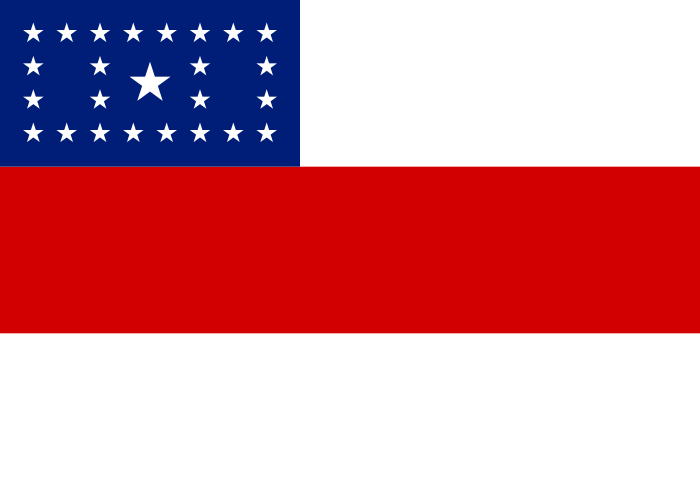
AmazonasAmazonas é um estado no noroeste do Brasil, conhecido por sua vasta floresta tropical e biodiversidade. A capital, Manaus, é um importante centro urbano e portuário na região amazônica. O estado abriga o Rio Amazonas, o maior rio do mundo em volume de água, e é famoso por suas reservas naturais e ecoturismo. A vida de muitas comunidades depende dos rios, que funcionam como estradas naturais durante boa parte do ano.
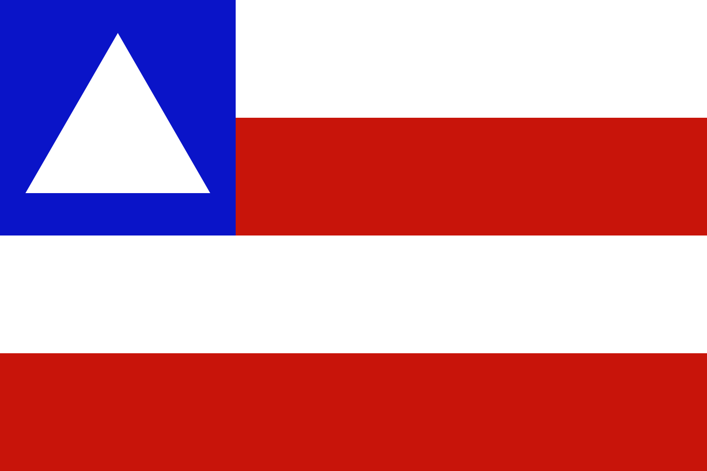
BahiaBahia é um estado no nordeste do Brasil, conhecido por sua rica cultura afro-brasileira, música, dança e culinária. A capital, Salvador, é famosa por seu centro histórico, praias e festivais, incluindo o Carnaval. O estado também possui belas paisagens naturais, como a Chapada Diamantina e a Costa do Descobrimento. Sua cultura combina influências indígenas, africanas e portuguesas em festas, ritmos e tradições religiosas.
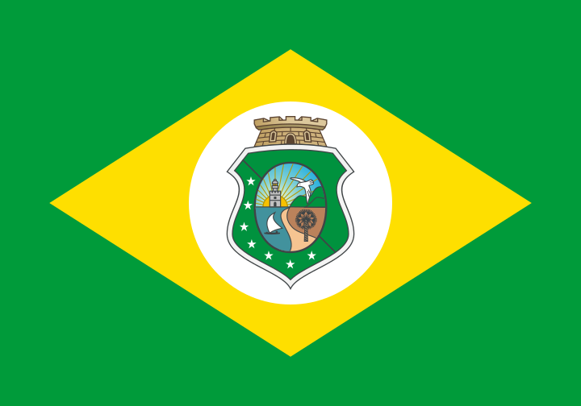
CearáCeará é um estado no nordeste do Brasil, conhecido por suas praias paradisíacas, dunas e falésias. A capital, Fortaleza, é famosa por sua vida noturna, gastronomia e cultura local. O estado também abriga o Parque Nacional de Jericoacoara, um destino turístico popular com lagoas e formações rochosas impressionantes. O artesanato, especialmente a renda e as peças feitas com palha, é uma parte importante da identidade cearense.
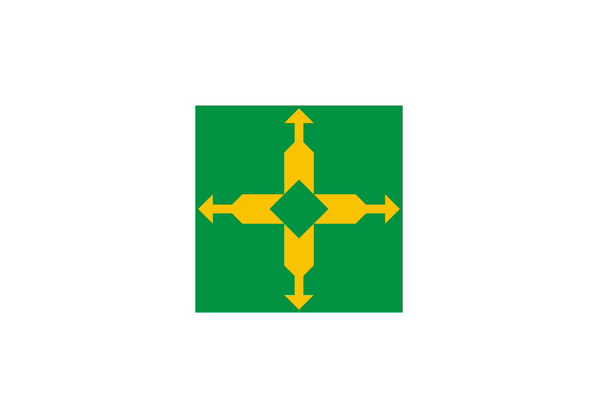
Distrito FederalO Distrito Federal é a região do Brasil que abrange a capital do país, Brasília. É conhecido por sua arquitetura modernista, museus e parques. A cidade foi planejada para organizar os principais órgãos do governo federal no centro do território brasileiro.
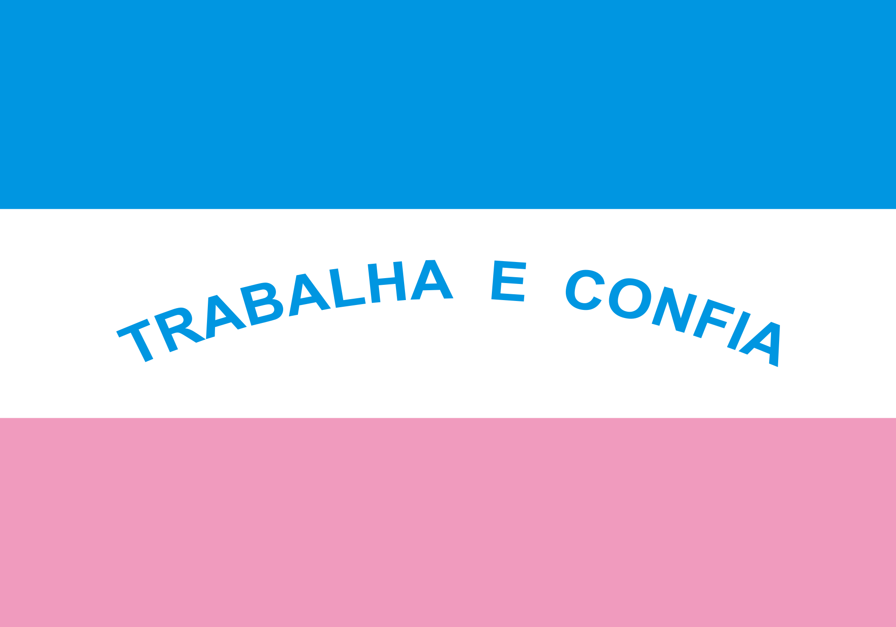
Espírito SantoEspírito Santo é um estado no sudeste do Brasil, conhecido por suas praias, montanhas e culinária baseada em frutos do mar. A capital é Vitória, uma das cidades construídas em uma ilha. O estado também se destaca pela produção de café e pelas áreas de Mata Atlântica.
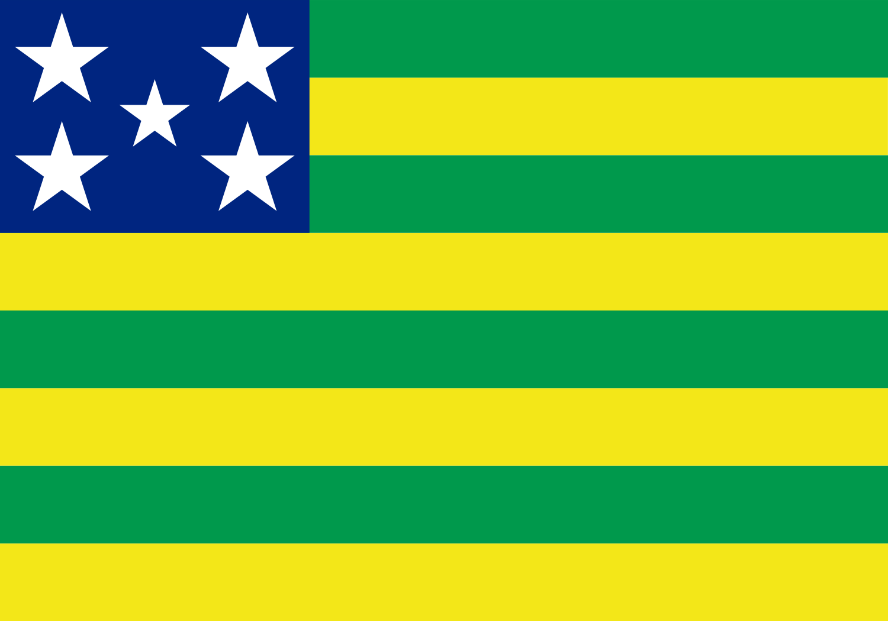
GoiásGoiás é um estado no centro-oeste do Brasil, conhecido pelo cerrado, pelas cachoeiras e pelas cidades históricas. A capital é Goiânia. Chapada dos Veadeiros e Pirenópolis atraem visitantes por suas trilhas, paisagens e patrimônio cultural.
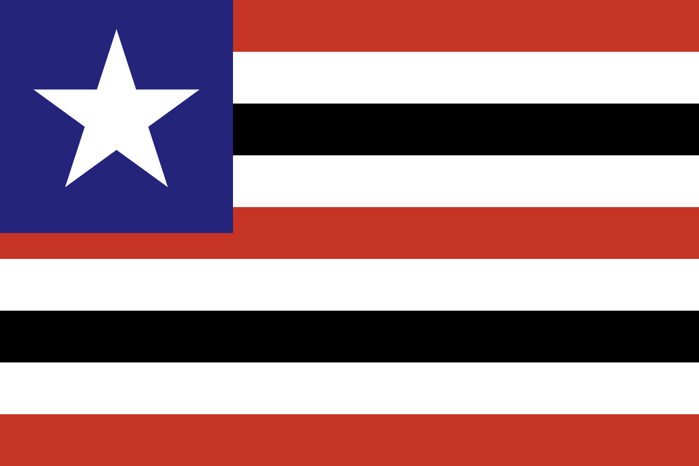
MaranhãoMaranhão é um estado no nordeste do Brasil, famoso pelos Lençóis Maranhenses, suas dunas e lagoas. A capital é São Luís, conhecida pelo centro histórico de casarões revestidos de azulejos. O estado também possui forte influência indígena e africana em sua cultura.
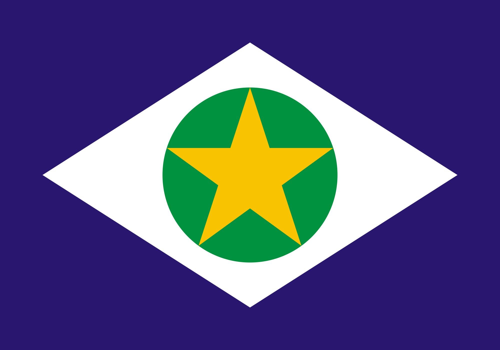
Mato GrossoMato Grosso é um estado no centro-oeste do Brasil, conhecido pelo Pantanal, pelo cerrado e pela Amazônia. A capital é Cuiabá. Essa variedade de biomas favorece uma grande diversidade de animais e plantas e torna o ecoturismo uma atividade importante.
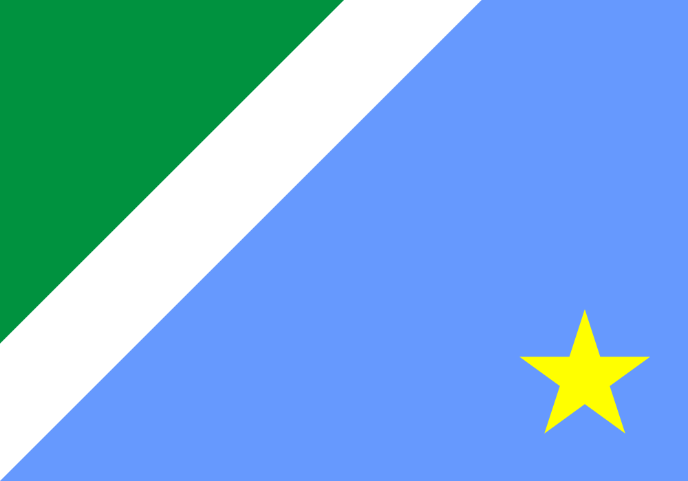
Mato Grosso do SulMato Grosso do Sul é um estado no centro-oeste do Brasil, conhecido pelo Pantanal e pelos rios de águas cristalinas. A capital é Campo Grande. Bonito é um dos principais destinos para mergulho em rios, observação de peixes e turismo de natureza.
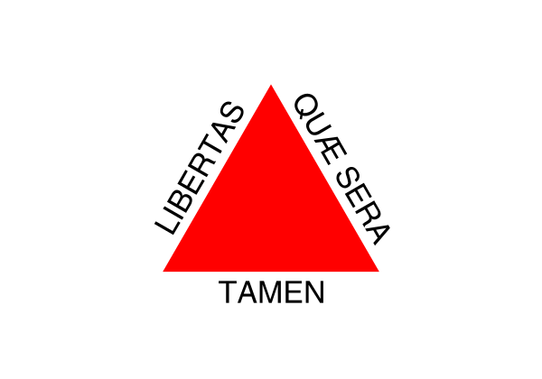
Minas GeraisMinas Gerais é um estado no sudeste do Brasil, conhecido pelas cidades históricas, montanhas e culinária tradicional. A capital é Belo Horizonte. Ouro Preto, Mariana e Tiradentes preservam igrejas, construções e memórias do período colonial e da mineração.
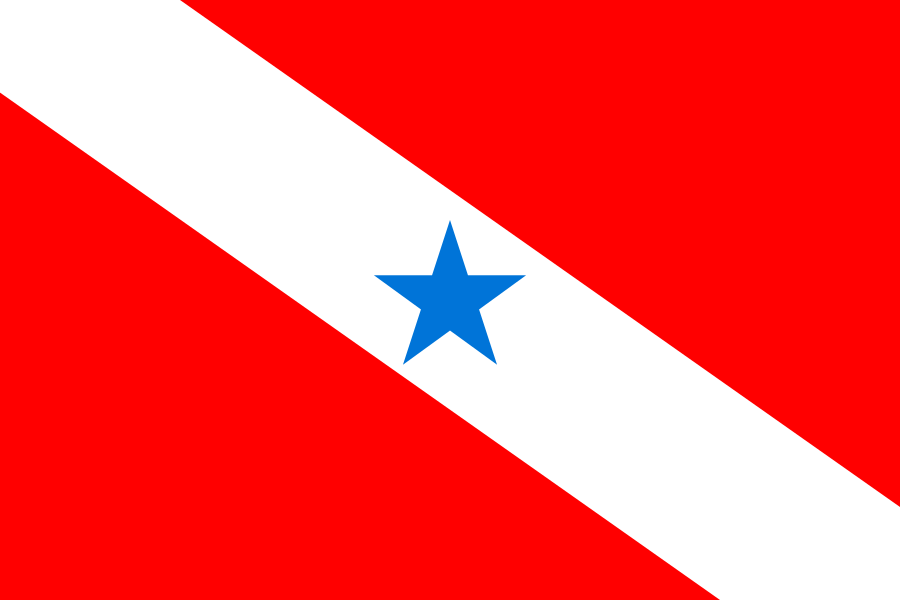
ParáPará é um estado no norte do Brasil, conhecido pela floresta Amazônica, pelo rio Amazonas e pela cultura paraense. A capital é Belém. A culinária regional utiliza ingredientes como açaí, tucupi, jambu e peixes dos rios amazônicos.
Paraíba é um estado no nordeste do Brasil, conhecido por suas praias e pelo patrimônio histórico de João Pessoa, sua capital. O interior reúne cidades antigas, paisagens do sertão e manifestações como o forró e o artesanato em couro.
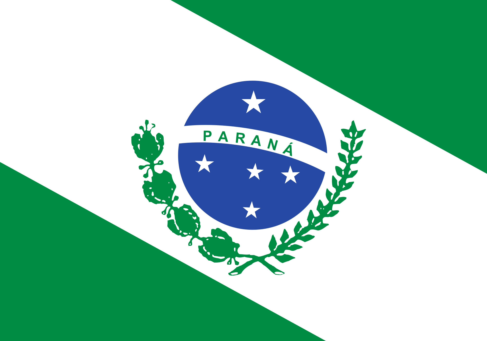
ParanáParaná é um estado no sul do Brasil, conhecido pelas Cataratas do Iguaçu, pelas araucárias e pela diversidade cultural. A capital é Curitiba. O estado também possui áreas de Mata Atlântica, litoral e uma agricultura diversificada.
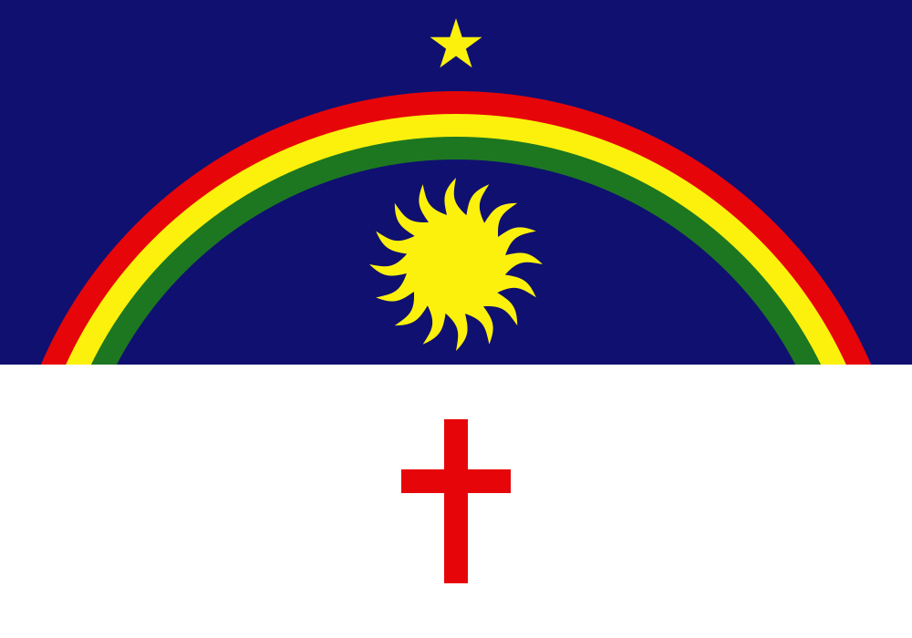
PernambucoPernambuco é um estado no nordeste do Brasil, conhecido por suas praias, pelo frevo e pelo carnaval. A capital é Recife. Olinda, Porto de Galinhas e o arquipélago de Fernando de Noronha fazem parte de seu importante patrimônio natural e cultural.
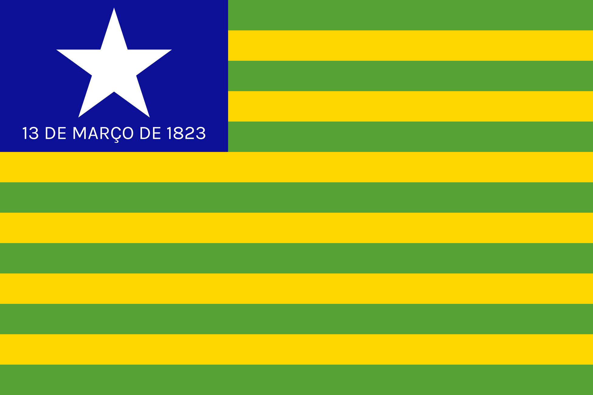
PiauíPiauí é um estado no nordeste do Brasil, conhecido pelo Parque Nacional da Serra da Capivara e por suas paisagens de caatinga. A capital é Teresina. O parque reúne pinturas rupestres e vestígios arqueológicos de grande importância para o estudo das primeiras ocupações humanas na América.
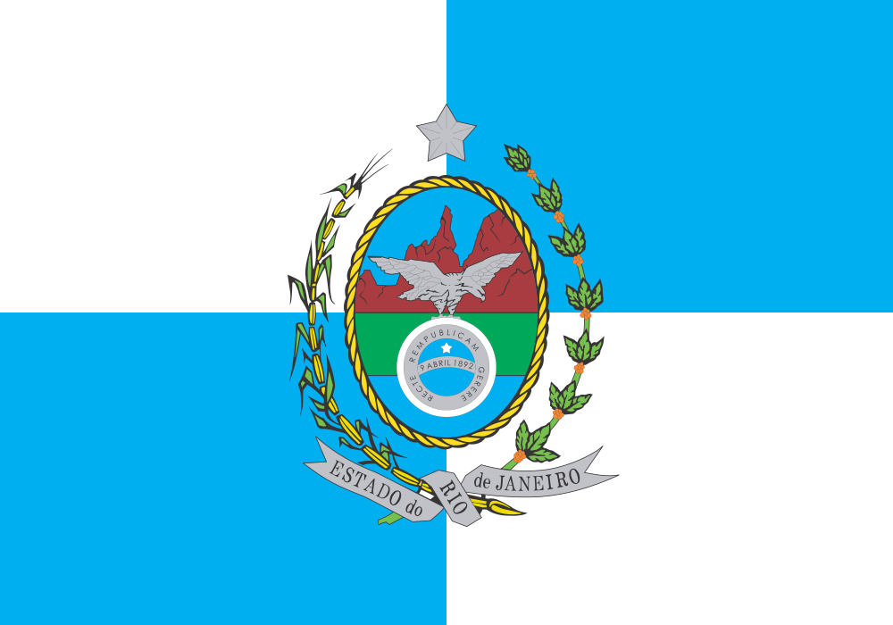
Rio de JaneiroRio de Janeiro é um estado no sudeste do Brasil, conhecido por suas praias, montanhas e pela cidade do Rio de Janeiro. A capital tem o mesmo nome do estado. Além da paisagem litorânea, o estado possui serras, florestas e cidades históricas como Paraty.
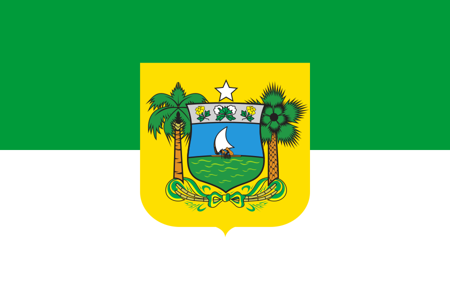
Rio Grande do NorteRio Grande do Norte é um estado no nordeste do Brasil, conhecido por suas dunas, praias e pelo litoral ensolarado. A capital é Natal. O litoral possui falésias, lagoas e áreas de preservação que favorecem atividades como passeios de buggy e mergulho.
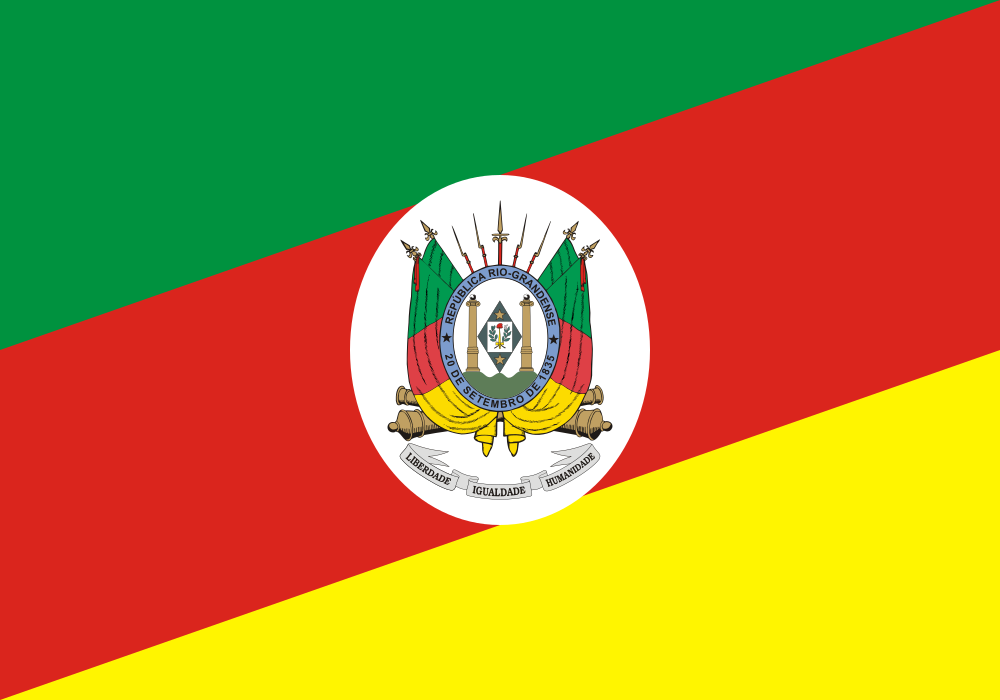
Rio Grande do SulRio Grande do Sul é um estado no sul do Brasil, conhecido pelas tradições gaúchas, pelos pampas e pelas serras. A capital é Porto Alegre. A cultura do estado também recebeu influências de imigrantes europeus, visíveis na arquitetura, na culinária e nas festas regionais.
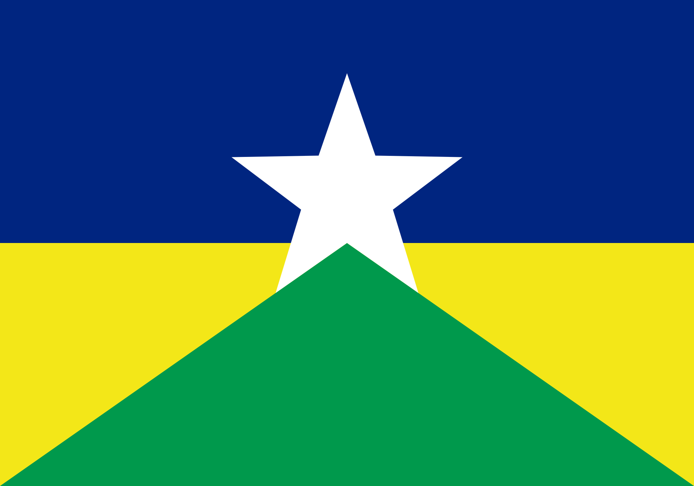
RondôniaRondônia é um estado no norte do Brasil, conhecido por seus rios, florestas e pela biodiversidade amazônica. A capital é Porto Velho. O rio Madeira tem importância para o transporte, para a economia e para a história da ocupação regional.
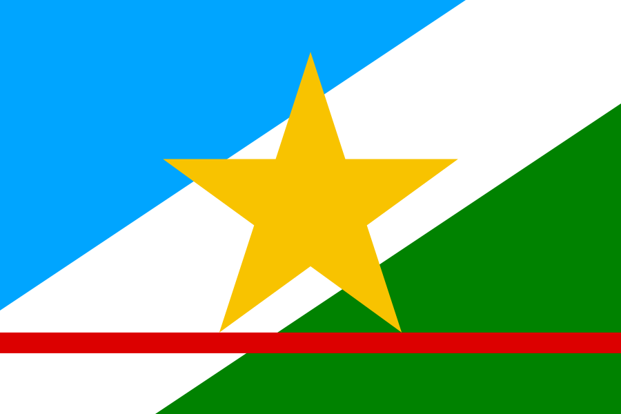
RoraimaRoraima é um estado no extremo norte do Brasil, conhecido pelo Monte Roraima e pelas paisagens amazônicas. A capital é Boa Vista. O território reúne savanas, serras e áreas de floresta, além de abrigar diversos povos indígenas.
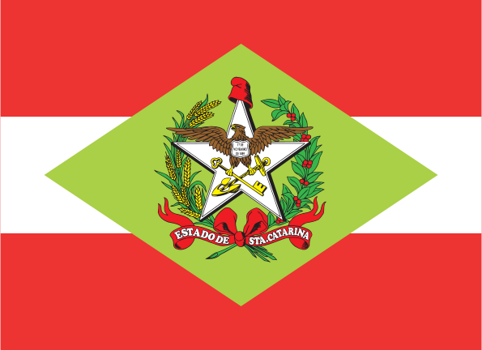
Santa CatarinaSanta Catarina é um estado no sul do Brasil, conhecido por suas praias, serras e influência cultural europeia. A capital é Florianópolis. O estado possui cidades litorâneas, áreas de colonização alemã e italiana e uma forte produção agroindustrial.
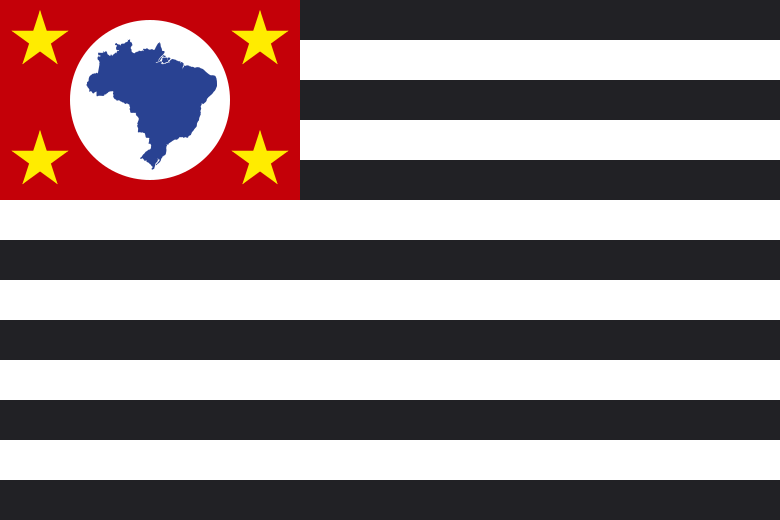
São PauloSão Paulo é um estado no sudeste do Brasil, conhecido por sua economia, diversidade cultural e grandes centros urbanos. A capital é São Paulo. O estado também possui praias, serras, áreas rurais e uma das maiores redes de universidades e centros de pesquisa do país.
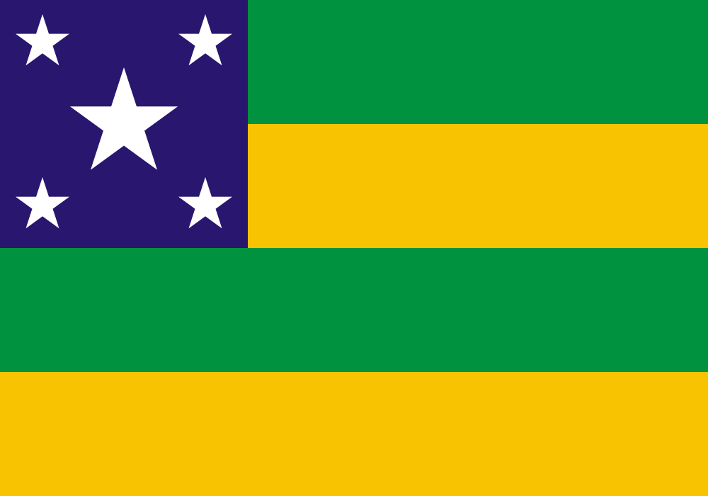
SergipeSergipe é o menor estado brasileiro, localizado no nordeste, conhecido por suas praias e pelo rio São Francisco. A capital é Aracaju. O estado combina litoral, manguezais, sertão e cidades históricas, como São Cristóvão.
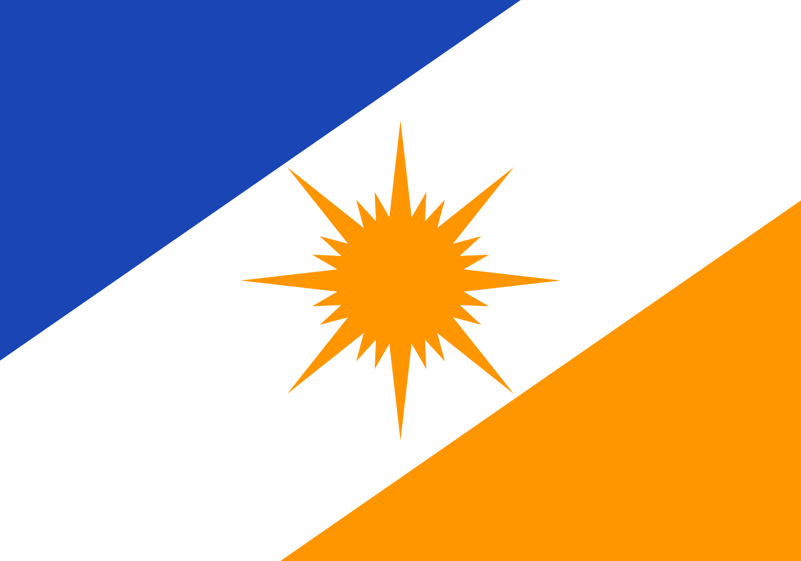
TocantinsTocantins é um estado no norte do Brasil, conhecido pelo cerrado, pelo Jalapão e por suas belezas naturais. A capital é Palmas. O estado possui rios, cachoeiras, dunas e áreas de transição entre o cerrado e a floresta amazônica.